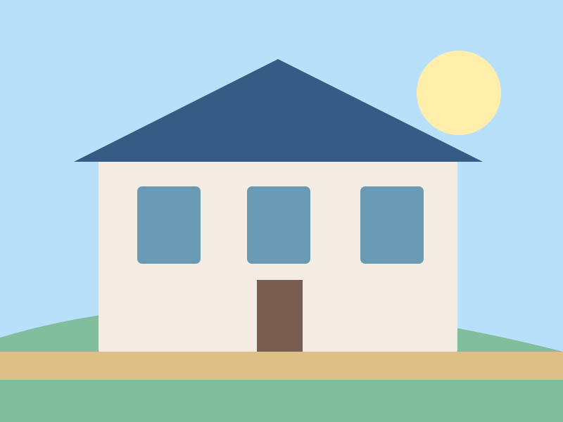
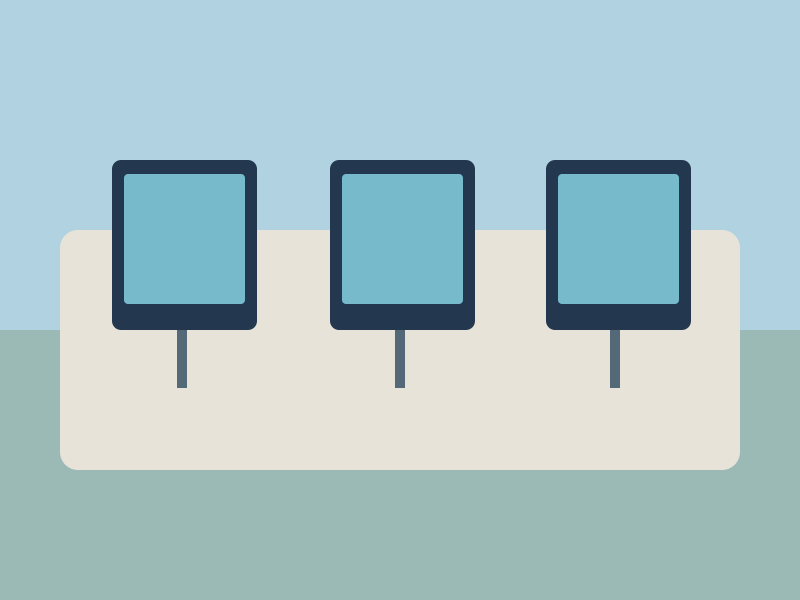
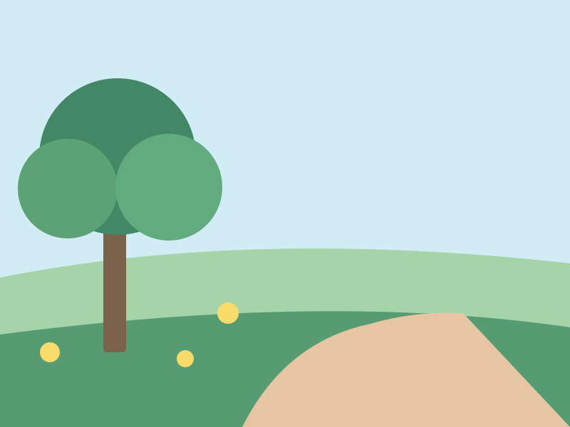
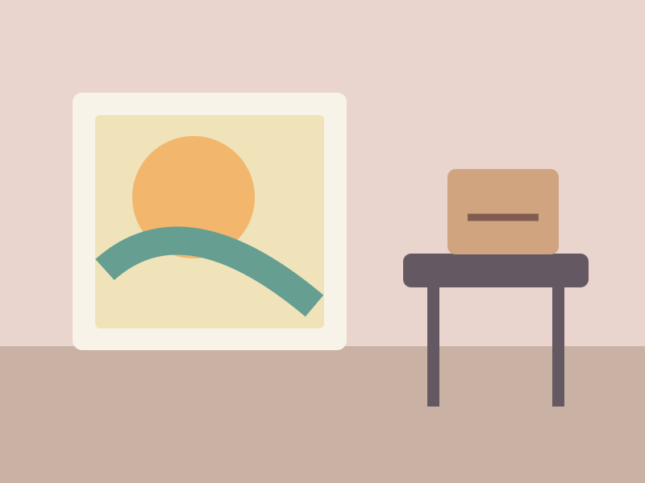

Responsive Image Gallery
Fix images that stretch or crop unpredictably. Learn aspect-ratio and object-fit.
Campus photo gallery
Resize the browser. The cards reflow and photos retain their proportions.



